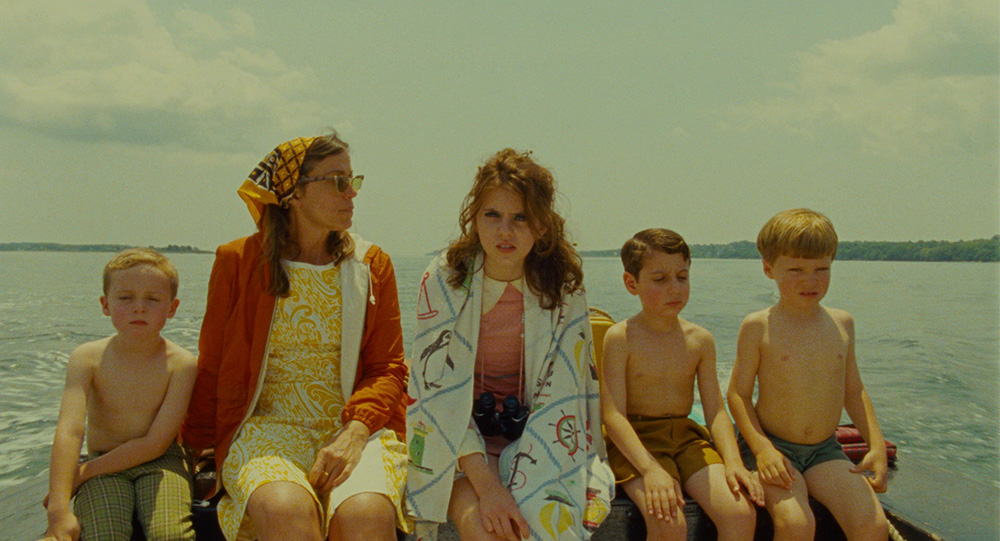
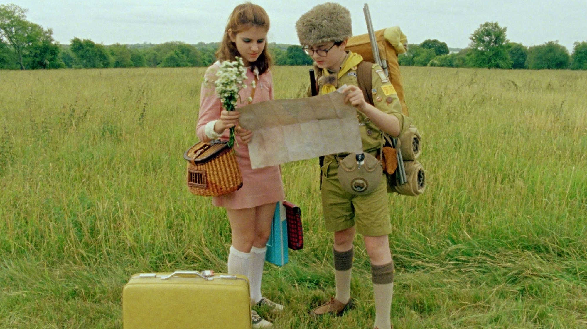
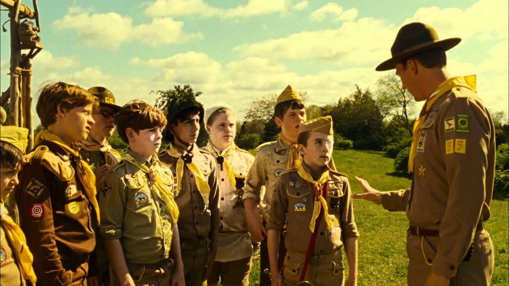

Moonrise Kingdom
is a 2012 American coming-of-age film directed by Wes Anderson, written by Anderson and Roman Coppola
"Set on an island off the coast of New England in the summer of 1965, Moonrise Kingdom tells the story of two twelve-year-olds who fall in love, make a secret pact, and run away together into the wilderness. As various authorities try to hunt them down, a violent storm is brewing off-shore -- and the peaceful island community is turned upside down in more ways than anyone can handle".


